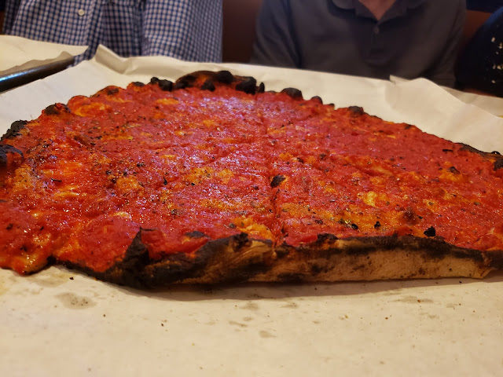

Apizza!

Description
This pizza dough is thin and crispy. Firm and easy to work with and maintains integrity when sliced up.
Ingredients
- High gluten bread flour
- Whole wheat flour
- Brown sugar
- EVOO
- Extra fine sea salt
- Yeast
- Water
Steps
A stand mixer helps, but you can do this in a large mixing bowl.
- Measure out all ingredients in grams.
- Add all of yeast, and ~1/4 of bread flour to cover it up.
- Add ~1/4 of water and mix briefly and let sit until bubbling.
- Add remaining flour and water. Add oil and sugar to water to avoid clumping and continue mixing.
- Add salt last and continue mixing until mixture becomes uniform and all flour has been absorbed.
- Dough should become a singular, firm object, but not mixed much further to avoid overworking.
- Portion into desired weight and fold into spheres.
- Let proof in refrigerator for at least 48 hrs.